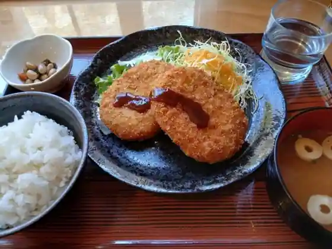
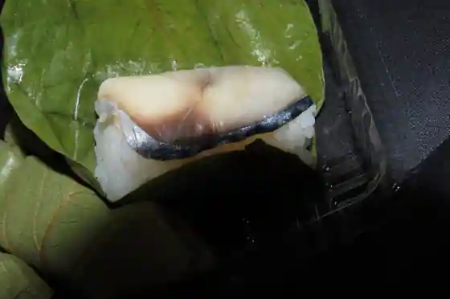
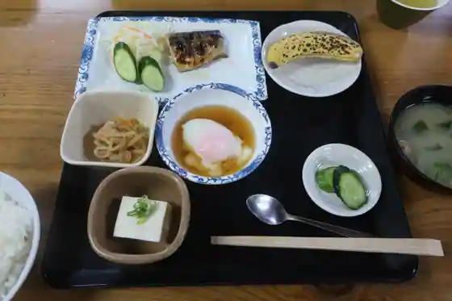
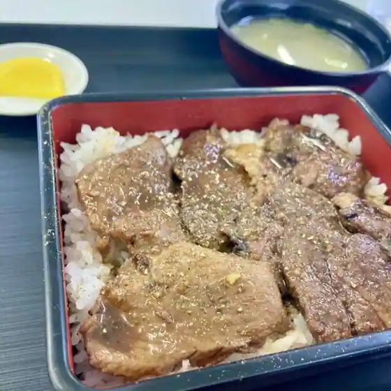
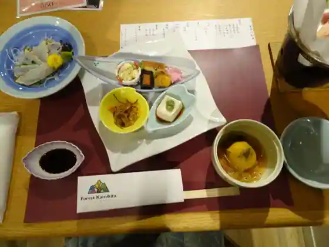
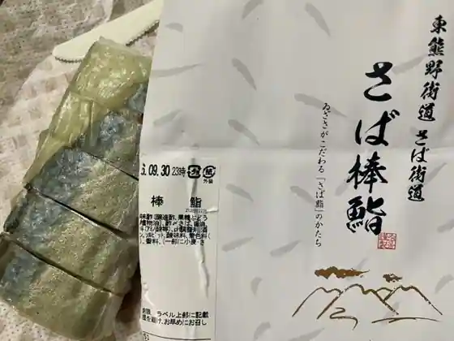
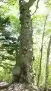
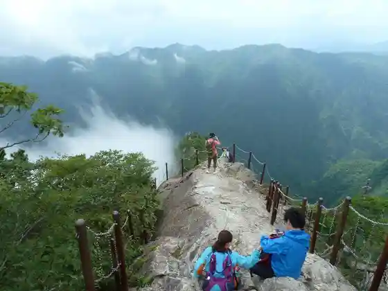
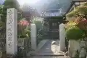

Kamikitayama, Nara: things to do, food and stays
Kamikitayama · Nara
Kamikitayama
Highlighted on the Nara map.

Stay
フォレストかみきた

Foresuto Kamikita
Inn at Irodorigautsukushi Onsen in Kawai, Kamikitayama.
Dining
大台ヶ原物産店 楓

Odai Ke Genbutsu San Momiji
ひろ

Hiro
道の駅 吉野路上北山

Michi No Eki Yoshino Rojo Kitayama
心・湯治館大台ヶ原

Kokoro Toji Kan Odai Ke Hara
こころ食堂

Kokoro Shokudo
レストラン 森人

Restaurant Mori Nin
ゐざさ 本店

Izasa Hon
Sights
Namego Tani
Oba Mine

Kazusa Mata Yama

Odaigahara

Keitoku Tera

Roadside Station (Yoshino Michi Kamikitayama)